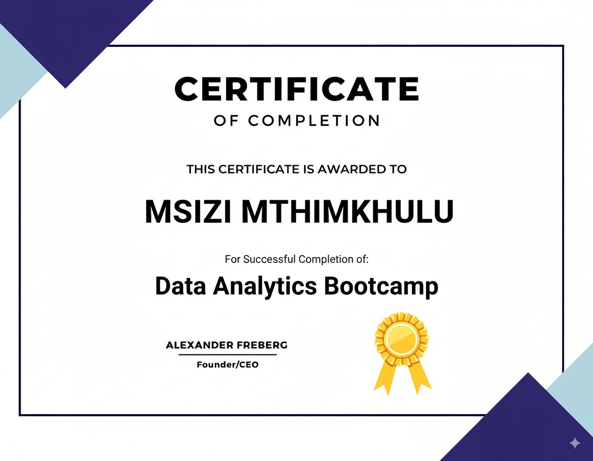

MNM
Certificates
Massage
It is with sincere gratitude that you took your time in reviewing my curated collection of projects and artistic endeavors. I trust that the visual experience provided has been both engaging and insightful. I am pleased to provide documentation of my professional qualifications. The enclosed certificates represent significant milestones in my career development, validating my expertise and commitment within my field. I invite you to examine these credentials at your convenience, as they further substantiate the skills and knowledge demonstrated in the preceding portfolio.
Image
Fit

Left & Right
As an ambitious, self-driven, and hardworking young professional, I possess strong interpersonal, problem-solving, and time management skills, complemented by a National Senior Certificate obtained from Kaalfontien Secondary School in December 2023. I deeply value teamwork and am adept at collaborating effectively within a group, while also maintaining strong individual performance. My professional development includes a YLED Graduation Certificate, a YLED Top Ten Certificate, and a Professional Foundation Certificate. I am currently enhancing my expertise through an intensive 7-month Data Analytics program at ALX Academy, having started on March 1, 2025. This program is designed to cultivate advanced technical and analytical proficiencies, including mastery of Microsoft software such as Excel and Power BI, and to refine my abilities in data-driven decision-making, problem-solving, and critical thinking.
My tenure as a Volunteer with the Youth Leadership & Entrepreneurship Development (YLED) program, from March 1, 2022, to October 30, 2022, significantly shaped my professional capabilities. This comprehensive program, structured in two phases, first honed my leadership skills, emphasizing interpersonal communication, goal setting, public speaking, and persuasive articulation. A notable project involved leading a volunteer initiative to address Gender-Based Violence, which not only allowed me to gather resources for affected individuals but also significantly enhanced my project management and collaborative leadership abilities. Subsequently, the entrepreneurship phase provided a platform to apply these skills commercially. I co-founded "Beast Plug," an electronic accessories company, and served as its Financial Manager, a role that demanded meticulous attention to detail in presenting our business model during a "Dragons' Den" competition and diligently managing the company's finances, including sales, cash flow, and profit tracking. This rich, dual experience in community leadership and business management has instilled in me a proactive, solutions-oriented approach that I am enthusiastic about contributing to the Systems Support program.
My core competencies include an intermediate proficiency in Microsoft Office, encompassing Word, Excel, PowerPoint, and Outlook, alongside intermediate skills in Power BI and Tableau. I also possess beginner-level knowledge of SQL and Python. These technical skills are complemented by strong analytical abilities, as well as effective verbal and written communication and presentation skills.